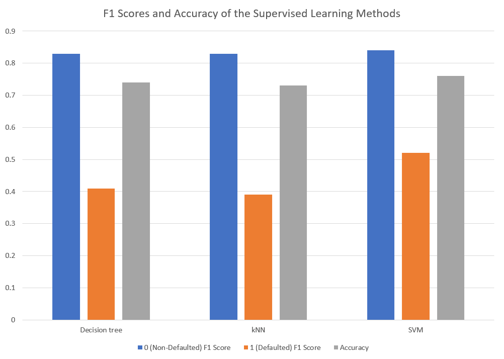
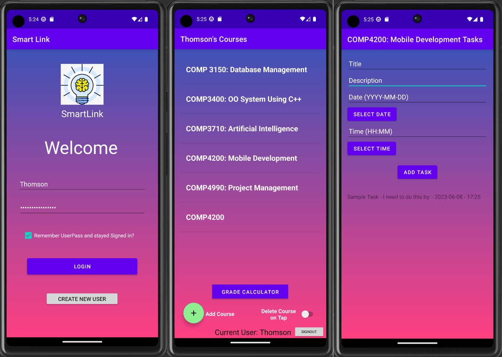
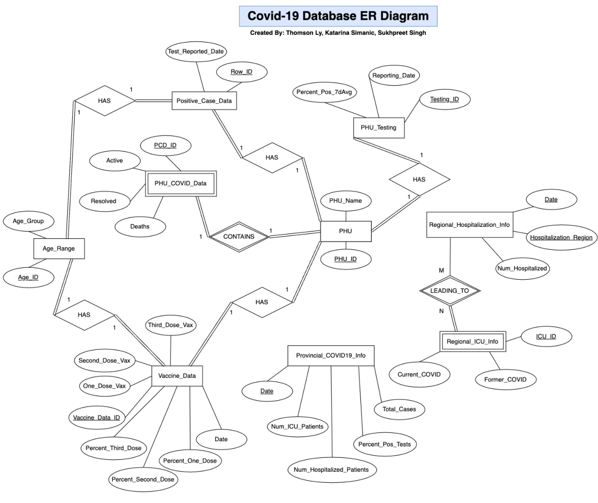
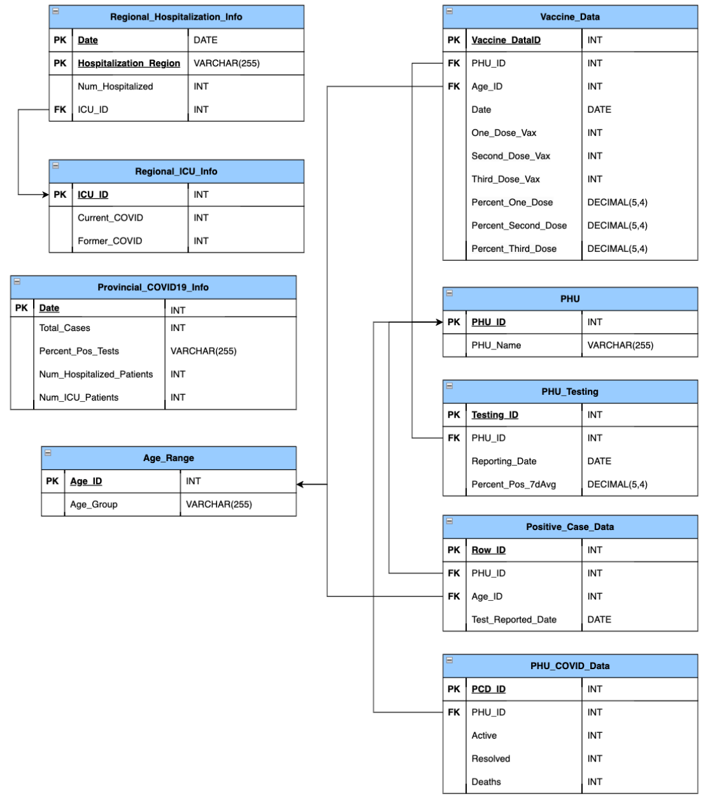

Hello! My name is Thomson Ly, and I am a 24 year old student at the University of Windsor (UofW). Currently, I am in my fourth semester of the accelerated Bachelor's in Computer Science - Applied Computing for Ugrads program. Previously I have completed my degree in Honours Biochemistry at this same University in 2020. I have been in many exciting organizations at this University, notably as Undergraduate Research Assistant for the Trant Lab, a Senior Medic for the UofW Student Medical Response Service Team and the secretary for the Undergraduate Chemistry Club.
Through Python's scikit-learn library, me and my colleagues, Rene Schuller, Katarina Simanic, Sukhpreet Singh, explored three supervised ML algorithms: Decision Tree, KNN (k-Nearest Neighbours), and SVM (Support Vector Machine). Optimal hyperparameters of such algorithms were identified and tuned in order to create the optimal models used in performing binary classification for the defaulting of credit card clients. A bar graph summarizing the results can be seen below.

Along with my colleagues Tayveon Holmes, Aleksandar Milosevski, and Aleksandar Simonovski, we created an Android Application for students to organize and manage their academic responsibilites through Java and Android Studio. It includes the following features: Underlying database functionality, new user creation, login/logout, course list creation, to-do list creation, GPA calculator. Sample pictures are shown below.

With my colleagues Katarina Simanic and Sukhpreet Singh, we designed a relational COVID-19 databse management system with complete ER diagrams and database schemas shown below. We cleaned over 1 000 000 raw provincial COVID-19 data from the government website utilizing Excel. Afterward, we implemented the MYSQL Ontario COVID-19 database using the compeleted ER diagrams, schema and cleaned data.

